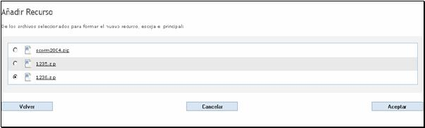
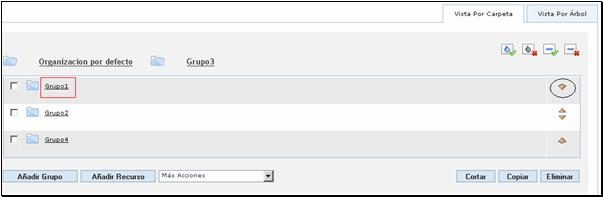
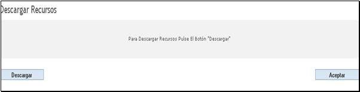
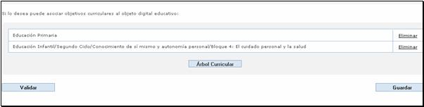
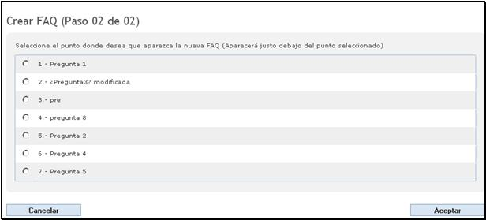

Índice
2.3.1. ¿Cómo se accede a Objetos Personales?
2.4.1. Composición de la pantalla
2.4.10. Elementos de Secuencia
2.4.11. Importar Objeto de Aprendizaje
2.4.12. Importar Recurso Scorm
2.4.13. Exportar Recurso Scorm
2.6.2. Formulario del catalogador básico
2.6.3. Asociación al Árbol Curricular
2.6.4. Validación de catalogación básica
2.6.5. Guardar catalogación básica
3.1. Transición y conversión de datos
3.2. Operaciones normales de producción
3.2.2. Crear un objeto digital educativo
1. Introducción
Este manual de usuario detalla el funcionamiento de cada módulo de la plataforma educativa creada para el Proyecto Agrega. Para cada uno de los subsistemas que lo componen se muestra una captura de pantalla de la aplicación y se explica su correcta utilización.
En el manual se especifican todos los procedimientos necesarios para operar con el sistema.
2. Descripción del Sistema
El proyecto Agrega está concebido para adaptarse a las necesidades específicas de cada CCAA en el ámbito de la educación, y a la vez, aportando un marco común de relación que permite a los miembros de las distintas comunidades educativas compartir y elaborar recursos.
Agrega está dirigido a toda la comunidad educativa. Por ello, la interfaz hombre-máquina, se ha diseñado y desarrollado siguiendo pautas y normativas de usabilidad, accesibilidad y multi-idioma para garantizar la mayor facilidad de uso y universalidad de las mismas.
Dicha plataforma se ha diseñado con la idea de promover la especificación de una interfaz que permita la creación de redes de repositorios digitales que interaccionen (intercambio de información entre dos o más sistemas) para facilitar a los usuarios el acceso a los contenidos educativos en ellos almacenados.
El alcance incluye el desarrollo de las herramientas necesarias para la elaboración, gestión y explotación de los contenidos, sin limitaciones estructurales para futuras ampliaciones.
A grandes rasgos, el sistema consta en la primera versión de tres módulos principales:
- Portal principal: desde el cual se pueden realizar búsquedas de objetos educativos y acceder a la herramienta de empaquetador de objetos.
- Objetos personales: mediante el cual accedemos a la herramienta de empaquetador básico.
- Portal de administración: mediante el cual es posible realizar una planificación de tareas para que se ejecuten en un tiempo determinado (por ejemplo, una carga masiva de objetos digitales).
A continuación se detallan los módulos básicos del sistema:
2.1. Menús comunes
Este es un menú que se encuentra en la parte superior de la página:
Fig 2.1 Menú Superior
2.1.1. Acerca de Agrega
(No disponible en esta versión)
2.1.2. Accesibilidad
Al pulsar sobre este enlace, aparecerán unas explicaciones sobre la Web de Red:
Fig 2.1.2 Accesibilidad
2.1.3. FAQs
Pulsando el enlace de FAQs, se accede a la página donde se pueden consultar las FAQs (Frequently Asked Questions).
Fig 2.1.3 FAQs
2.1.4. Mapa
Pulsando sobre “Mapa” aparecen de forma esquemática todas las posibles secciones de la aplicación.
Fig 2.1.4 Mapa
2.1.5. Contacto
(No disponible en esta versión)
2.2. Portal Agrega
En la página principal, se encuentran los botones y enlaces a todas las aplicaciones de la aplicación:

Fig 2.2 Portada
A continuación se hará una breve introducción a cada una de las partes, las cuales se explicarán con detalle en apartados posteriores.
2.2.1. Menú lateral izquierdo
Fig 2.2.1 Menú lateral izquierdo
2.2.2. Noticias
Pulsando el apartado de noticias, se abrirá una página con noticias, pulsando sobre ellas se accederá a una información más detallada de la misma, incluyendo las imágenes adjuntas.
Fig 2.2.2 Noticias
2.2.3. Buscar
Busca una palabra en el idioma seleccionado. Se encuentra en la parte superior derecha del portal.
Fig 2.2.3 Buscar
2.3. Objetos Personales
2.3.1. ¿Cómo se accede a Objetos Personales?
La forma de acceder a los objetos personales es a través de la pantalla principal; como se puede observar, la barra de herramientas situada en la parte superior, está formada por una serie de nombres, los cuales al hacer clic sobre cada uno de ellos, conducen a una nueva página.
Fig 2.3.1 Acceso a objetos personales
2.4. Empaquetador Básico
La pantalla que se abrirá a continuación será la siguiente:
Fig 2.4 Pantalla de objetos personales
2.4.1. Composición de la pantalla
La pantalla del Empaquetador Básico está formada por una serie de botones, pestañas y enlaces que se explicarán a continuación:
2.4.2. Añadir Grupo
Este botón dará acceso a una nueva ventana donde se podrá elegir el nombre del grupo que se desea .Si se pulsa sobre éste botón aparecerá la siguiente ventana:

Fig 2.4.2.a Creación de nuevo grupo
En esta ventana, se introduce el nombre identificativo del grupo que se desea crear. Una vez pulsado el botón “Aceptar”, se vuelve a la pantalla anterior, con un nuevo grupo añadido.
Fig 2.4.2.b nuevo grupo
Éste nuevo grupo creado “Grupo1”, se ha creado dentro de “Organizaciones por defecto”.
A partir de ahora se tiene dos opciones:
Opción1: Crear otro grupo dentro de “Organizaciones por defecto”, para lo cual se sigue el mismo método; pulsar el botón “Añadir Grupo” y ponerle un nombre. En nuestro caso se llamará “Grupo2”
Fig 2.4.2.c Añadir grupo en la “Organización por defecto”
Opción2: Crear un subgrupo dentro de un grupo ya creado; para ello se debe hacer clic sobre el nombre del grupo. En nuestro caso se pulsará sobre “Grupo1”, el cual pasará a la parte superior indicando con ello que lo que creamos ahora, está dentro de éste.
Fig 2.4.2.d Subgrupo
2.4.3. Añadir Recurso
Éste botón dará acceso a una nueva ventana donde se podrá elegir el nombre del recurso que se desea.
Fig 2.4.3.a Poner nombre al recurso
Si se pulsa el botón de “cancelar” se vuelve a la pantalla anterior, pero si se pulsa el botón de “Aceptar”, se continúa con el proceso de añadir un nuevo recurso.
En la siguiente pantalla, se podrá añadir los ficheros que se desee que contenga el recurso, los cuales, deben ser de un determinado tipo:
- Fichero comprimido (.zip).
- Tipo Resource Content Package.
Fig 2.4.3.b Seleccionar Archivos.
Hay varias formas de subir ficheros:
1. Subir un único archivo
1.1 Se pulsa el botón examinar y se selecciona el fichero deseado
Fig 2.4.3.c examinar.
1.2 Se pulsa el botón subir archivo
Fig 2.4.3.d subir archivos
1.3 Una vez subido el archivo se pulsa “aceptar” y se continúa con el proceso.
2. Subir más de un archivo.
Fig 2.4.3.e subir archivos
Hay dos formas de subir más de un archivo:
2.1 Se repite la acción de pulsar el botón “Examinar” y seleccionar el archivo las veces que se desee. Acto seguido se pulsará el botón “Subir Archivos”.
2.2 Se repite la acción de pulsar el botón “Examinar”, seleccionar el fichero y pulsar el botón “Subir Archivos” las veces que se desee.
Una vez subido los archivos, se pulsa “aceptar” y se continúa con el proceso
Pulsando el link “Vaciar Archivos Seleccionados” se eliminan todos los ficheros subidos.
Si lo que se quiere es borrar un archivo en concreto, pulsando el link “Eliminar”, se borrará el archivo que se encuentra alineado.
Fig 2.4.3.f Archivos seleccionados.
Para volver a la pantalla anterior existe un botón “Volver”.
La pantalla que sigue sirve para seleccionar el fichero principal. Como en las anteriores pantallas, existe un botón “Volver” que regresa a la pantalla anterior; un botón “Cancelar” que regresa al principio y un botón “Aceptar” que guarda los cambios y sigue el proceso.

Fig 2.4.3.g Selección del archivo principal.
2.4.4. Cortar
Si se quiere cortar uno o varios grupos o recursos y llevarlos al portapapeles. Se pulsa el botón “Cortar”.
Fig 2.4.4.a Selección ficheros
Una vez cortados los elementos, si se desea se pueden eliminar permanentemente del portapapeles pulsando el link “Eliminar” o vaciar el portapapeles entero pulsando “Vaciar Portapapeles”:
Fig 2.4.4.b ficheros en el portapapeles
2.4.5. Copiar
Si se quiere copiar uno o varios grupos o recursos y llevarlos al portapapeles. Se pulsa el botón “Copiar”.
Fig 2.4.5.a Selección ficheros
Los ficheros se duplican al portapapeles
Fig 2.4.5.b fichero en portapapeles
2.4.6. Pegar
Este botón sólo aparece si hay algún elemento en el portapapeles. Al pulsar dicho botón, todo lo que haya en el portapapeles se pegará en la carpeta en la que se encuentre.
Fig 2.4.6.a se pulsa el botón pegar
Desaparece todo lo que hay en el portapapeles y se pegan los elementos en la carpeta en la se encuentre el usuario en ese momento.
Fig 2.4.6.b se pegan los elementos
2.4.7. Eliminar
Si se quiere eliminar uno o varios grupos o recursos. Se pulsa el botón “Eliminar”.

Fig 2.4.7.a selección de ficheros para eliminar definitivamente
Fig 2.4.7.b ficheros eliminados
2.4.8. Flechas desplazamiento
Fig 2.4.8.a fechas de desplazamiento
Con estas flechas se puede cambiar el orden en la lista de los elementos.
Si se pulsa la flecha hacia abajo , el “Grupo1”, descenderá una posición:

Fig 2.4.8.b pulsar flecha
Fig 2.4.8.c El Grupo1 ha descendido una posición
2.4.9. Pestaña de vistas
Fig 2.4.9.a Pestaña de vistas
-Vista por Carpeta:
Fig 2.4.9.b Vista por carpeta
-Vista por Árbol:
Fig 2.4.9.c Vista por árbol
2.4.10. Elementos de Secuencia
Fig 2.4.10.a Elementos de secuencia
Pulsando sobre cualquiera de ellos se va a una página en la cual se puede escoger la secuencia.
Fig 2.4.10.b Selección de secuencia
Inicialmente aparece marcado con unos valores por defecto. Si se cambian dichos valores y se quiere volver a ellos, existe un botón que realiza esa operación llamado “Valor Por Defecto”. Si se desea volver a la página principal si ningún cambio realizado, se pulsa el botón “Cancelar” y si tras haber seleccionado una combinación se desea que ésta quede guardada, se pulsará el botón “Aceptar”.
2.4.11. Importar Objeto de Aprendizaje
Al pulsar en el desplegable “Importar Objeto de Aprendizaje”, como su propio nombre indica, se da paso a una página en la que mediante una serie de pasos se agregará un submanifiesto:
Fig 2.4.11.a Agregar submanifiesto
Al pulsar el botón “Cancelar”, se volverá a la pantalla inicial, pero si se pulsa “Continuar” se da paso a una página donde se selecciona el submanifiesto, el cual debe estar comprimido.
Fig 2.4.11.b Selección del submanifiesto
Al pulsar el botón aceptar se vuelve a la pantalla principal con el nuevo submanifiesto agregado:
Fig 2.4.11.c página principal con Submanifiesto
2.4.12. Importar Recurso Scorm
Al pulsar en el desplegable “Importar Recurso Scorm”, como su propio nombre indica, se da paso a una página en la que mediante una serie de pasos se importará un recurso.
En esta página al pulsar el botón examinar, se seleccionará un manifiesto el cual tendrá varios recursos dentro. Dicho manifiesto tendrá que estar en formato comprimido.
Fig 2.4.12.a Importar recurso
En la página principal se importarán tantos recursos como contenga el manifiesto.
Fig 2.4.12.b Recursos importados
2.4.13. Exportar Recurso Scorm
Para realizar esta acción se debe seleccionar el/los recursos que se desea exportar y pulsar en el desplegable la opción “Exportar Recurso Scorm”. La cual conducirá a una página para elegir el nombre del grupo que va a contener los recursos seleccionados
Fig 2.4.13.a Nombre grupo recursos
Al pulsar el botón “Cancelar” se vuelve a la página anterior sin cambios y si se pulsa el botón “Aceptar” se va a una página en la que se puede Descargar.

Fig 2.4.13.b Descarga de los recursos
2.5. Previsualizador
El visualizador se encarga de representar los objetos digitales educativos (ODEs) que recibe del empaquetador, así como del buscador.
Fig 2.5 Visualizador
Al cargar un ODE el visualizador es capaz de visualizarlo mediante una pantalla como la que se muestra en la figura superior.
Desde el empaquetador básico, y durante la creación de un ODE, es posible visualizar la estructura del mismo, así como los recursos añadidos mediante la herramienta Visualizador. De la misma forma, cuando se realiza una búsqueda en el repositorio de la plataforma y se selecciona un ODE de los encontrados, es posible visualizar su contenido también mediante esta herramienta.
2.5.1. Cabecera
En la cabecera se puede ver tanto el nombre de la organización principal del ODE que se está visualizando, como los enlaces de ayuda y salir, los cuales tienen como función poder acceder a la ayuda de la aplicación o salir de la misma.
Fig 2.5.1 Cabecera del visualizador
2.5.2. Menú Lateral
En el menú lateral se muestra el nombre de todas las organizaciones del ODE que se está visualizando.
Fig 2.5.2 Menú lateral del visualizador

Pulsando en el nombre de la organización, o en el signo más que aparece a su izquierda se despliega el contenido de la organización, mostrando los diferentes grupos contenidos en la misma.
Fig 2.5.2 Menú lateral del visualizador desplegado
2.5.3. Contenido de recursos
Fig 2.5.3 Visualización de recursos
Los ítems se pueden desplegar de la misma forma que las organizaciones, y los recursos son mostrados en la parte derecha de la pantalla al pulsar sobre ellos.
2.6. Catalogador Básico
El catalogador básico asocia a los ODEs editados mediante el empaquetador básico la metainformación necesaria para su adecuada catalogación y posterior localización del objeto educativo.
Para que un objeto pueda entrar dentro del flujo de trabajo dirigido a su publicación, ha de tener asociada una catalogación básica, es decir disponer de una metainformación obligatoria, que será comprobada y completada en el proceso de validación.
La catalogación básica está basada en un subconjunto del estándar de metadatos LOM-ES. Los valores requeridos se solicitan mediante un formulario que se muestra a continuación.
Para rellenar el campo correspondiente a los objetivos curriculares es necesario realizar una navegación por el árbol curricular hasta seleccionar el objetivo deseado.

Fig 2.6 Catalogador básico
2.6.1. Cabecera
En la parte superior de la pantalla el catalogador básico dispone cuatro enlaces:
- Si desde el catalogador básico se quiere volver al empaquetador, se debe pulsar el enlace “Volver”. Si no se ha pulsado el botón de Guardar del catalogador, los cambios realizados se perderán al volver al empaquetador.
- El enlace “Ayuda” muestra la ayuda que ofrece el sistema para utilizar las diferentes herramientas de la plataforma.
- El enlace “Perfil” muestra el perfil del usuario ofreciendo la posibilidad de edición.
- Si se desea salir de la aplicación se debe pulsar el enlace “Salir”.
Fig 2.6.1 Cabecera del catalogador básico
2.6.2. Formulario del catalogador básico
El cuerpo de la pantalla muestra un formulario destinado para completar todos los campos requeridos por el estándar de metadatos LOM-ES. Se muestran los campos obligatorios correspondientes a las categorías “General” y “Uso Educativo” de LOM-ES.
Fig 2.6.2.a Formulario del catalogador básico
- Título
Es el campo destinado para que el usuario introduzca el nombre asignado al objeto educativo que se está catalogando. Se trata de un campo de texto libre, el cuál no tiene limitado el número de caracteres.
Fig 2.6.2.b Campo Título
- Idioma
Es el campo destinado para que el usuario elija el idioma predominante en el ODE. Si el objeto educativo no tuviese contenido escrito en ningún idioma (como en el caso de un cuadro, por ejemplo), entonces el valor apropiado para este elemento es “ninguno”. Esta elección se realiza eligiendo un valor de los mostrados en el combo correspondiente, tal y como se muestra en la figura.
Fig 2.6.2.b Combo Idioma
- Descripción
Es el campo destinado para que el usuario haga una descripción textual del contenido del ODE que se está catalogando. Se trata de un campo de texto libre, el cuál no tiene limitado el número de caracteres.
Fig 2.6.2.c Campo Descripción
- Tipo de recurso
Es el campo destinado para que el usuario elija el tipo específico de recurso educativo u objeto digital. Esta elección se realiza eligiendo un valor de los mostrados en el combo correspondiente, tal y como se muestra en la figura.
Fig 2.6.2.d Combo Tipo de Recurso
- Contexto
Es el campo destinado para que el usuario elija el entorno principal en el que se debe utilizar este ODE. Esta elección se realiza eligiendo un valor de los mostrados en el combo correspondiente, tal y como se muestra en la figura.

Fig 2.6.2.e Combo Contexto
- Edad
Es el campo destinado para que se describa la edad del destinatario, al cual va dirigido el objeto educativo. Este elemento de datos se refiere a la edad de desarrollo intelectual, en caso de que ésta fuese distinta de la edad cronológica. Se trata de un campo de texto libre, el cuál no tiene limitado el número de caracteres.
Fig 2.6.2.f Campo Edad
- Idioma Destinatario
Es el campo reservado para que el usuario elija el idioma utilizado por el destinatario de este ODE. Esta elección se realiza eligiendo un valor de los mostrados en el combo correspondiente, tal y como se muestra en la figura.
Fig 2.6.2.g Combo Idioma Destinatario
- Proceso Cognitivo
Es el campo destinado para que el usuario elija la actividad provocada en el usuario de destino, es decir el proceso cognitivo principal implicado en el proceso de aprendizaje-evaluación. Esta elección se realiza eligiendo un valor de los mostrados en el combo correspondiente, tal y como se muestra en la figura.
Fig 2.6.2.h Combo Proceso Cognitivo
2.6.3. Asociación al Árbol Curricular
Fig 2.6.3.a Árboles Curriculares
El árbol curricular se utiliza como una fuente taxonómica de las que se esperan en la categoría “Clasificación” de LOM-ES, y sirve para asociar el ODE a un objetivo curricular.
El árbol curricular está compuesto por cuatro niveles:
- Etapas
- Ciclos/Cursos
- Áreas/Materias
- Bloques de contenidos
Se puede ir avanzando por los diferentes niveles, hasta llegar al objetivo más conveniente al que asociar el objeto educativo.
Si se desea asociar un objetivo curricular al ODE se debe pulsar sobre el botón “Árbol Curricular” que se encuentra en el catalogador básico. En este momento, aparece una nueva pantalla que muestra el primer nivel del árbol curricular.
Fig 2.6.3.b Nivel inicial del árbol curricular
Seleccionando el círculo del objetivo curricular deseado y pulsando el botón “Asociar” el árbol curricular se añade a la lista de los objetivos curriculares. En este momento, se vuelve automáticamente a la pantalla del catalogador y aparece el objetivo curricular seleccionado.
Fig 2.6.3.c Nivel interior del árbol curricular
Es posible navegar por el árbol curricular, avanzando por los diferentes niveles de éste. Para ello, se tiene que pulsar encima del texto deseado, para así poder entrar en un nivel más interno de su estructura del árbol.
Fig 2.6.3.d Nivel interior del árbol curricular
La ruta que muestra el grado de avance en profundidad en el árbol curricular es mostrada en la parte superior de los objetivos curriculares. Para volver atrás desde algún nivel del árbol es posible pulsar en la ruta superior para dirigirse al nivel deseado.
Fig 2.6.3.e Ruta en el árbol curricular
Cuando se llega al nivel deseado se procede de la forma anteriormente explicada para asociar el objeto educativo a un objetivo.
Fig 2.6.3.f Objetivo curricular asociado
Si se quiere cancelar la acción de asociar un árbol curricular se pulsa el botón “Cancelar” que aparece en la parte izquierda de la pantalla, y se vuelve al catalogador básico, sin asociar ningún objetivo curricular.
Si se quiere eliminar un objetivo curricular se debe pulsar sobre el enlace “Eliminar”.

Fig 2.6.3.g Eliminar objetivo curricular
2.6.4. Validación de catalogación básica
Para que un ODE pueda ser publicado en la plataforma, debe ser necesario que la catalogación básica se haya realizado correctamente, esto es, que todos los campos que aparecen en el formulario hayan sido rellenados. Para poder validar que el ODE está listo para publicar se debe pulsar el botón “Validar” desde la pantalla del catalogador básico.
Si el ODE es válido aparece la siguiente pantalla:
Fig 2.6.4.a ODE válido
Si algún campo requerido para publicar el ODE no ha sido completado, se muestra una pantalla que indica que el objeto no es válido, y los campos que faltan por rellenar para obtener un ODE válido para publicación. La pantalla tiene las siguientes características:
Fig 2.6.4.b ODE no válido
Pulsando el botón “Cerrar”, tanto en la pantalla de ODE válido como en la pantalla de ODE inválido, se vuelve a la pantalla de Catalogación.
2.6.5. Guardar catalogación básica
Desde el catalogador básico, pulsando el botón “Guardar” se muestra una pantalla que solicita confirmación para guardar los metadatos asociados al ODE. Si se pulsa en el botón “Aceptar” se guardan los cambios y vuelve a la pantalla de Catalogación; si por el contrario se pulsa el botón “Cancelar” vuelve a la pantalla de Catalogación sin guardar los cambios. A continuación se muestra la pantalla de confirmación para guardar la catalogación básica:
Fig 2.6.5 Confirmación para guardar catalogación
2.7. Admin
Fig 2.7 Pantalla de administración del Portal.
2.7.1. Menú Contenidos
Fig 2.7.1 Menú lateral izquierdo
2.7.2. Noticias
Es la pantalla por defecto, también se accede pulsando el apartado de noticias. Pulsando sobre ellas se accede a la pantalla para modificarlas. También se pueden crear desde aquí nuevas noticias o eliminar las ya existentes.
Fig 2.7.2.a Noticias
- Crear Noticia
En la pantalla de crear noticia se rellenan todos los campos relativos a la noticia. Los principales, los cuales son obligatorios (están marcados con un asterisco al comienzo): título, fecha, resumen, categoría, idioma y el estado. La categoría puede ser una existente o se puede crear una nueva. A la noticia se le puede adjuntar una imagen. El formato de la fecha es dd/mm/aaaa. La fecha debe ser igual o mayor a la actual. La longitud máxima del título es de 100 caracteres, para el resumen es de 256 caracteres y para el cuerpo es de 4000 caracteres.
Fig 2.7.2.b Crear Noticias
- Modificar Noticia
En este caso se trata de la modificación de una noticia ya existente. Igualmente los campos obligatorios deben estar presentes y no se pueden suprimir, y las longitudes admitidas para los distintos campos son evidentemente las mismas.
Fig 2.7.2.c Modificar Noticias
2.7.3. Faqs
Al igual que en la pantalla de noticias, desde aquí se pueden administrar las faqs.:
Fig 2.7.3.a faq
- Modificar Faqs
Pulsando sobre la pregunta o sobre el link de “Modificar”, se podrá ver la pregunta con su respuesta en el caso de haberla o hacer cambios del contenido y del Idioma.
Fig 2.7.3.b modificación faq
Si se pulsa el botón de “Cancelar” se vuelve a la pantalla anterior y si se pulsa el botón “Aceptar” se continúa el proceso de modificación seleccionando la posición en la que se desea que aparezca el FAQ modificado.
Fig 2.7.3.c posicionamiento faq modificado
Al pulsar el botón aceptar se vuelve al listado de FAQs con la nueva ubicación.
- Crear Faq
Pulsando sobre el botón Crear FAQ, como su nombre indica, se pasará a una pantalla de creación, la cual inicialmente está vacía para que el usuario introduzca los datos que desee.
Fig 2.7.3.d creación de faq
Al pulsar el botón “aceptar” se seleccionará la posición en la que se desea que aparezca el faq, la cual será debajo de la posición seleccionada.

Fig 2.7.3.e creación de faq
- Eliminar Faq
Para eliminar uno o varios fax, basta con seleccionar el faq que se desee y pulsar el botón eliminar.
Fig 2.7.3.g eliminación de faq
2.7.4. Plataforma
Fig 2.7.4 Plataforma
2.7.5. Planificador
Este módulo se encarga de las tareas que se usarán para el mantenimiento del portal, tales como carga de Odes, reindexado, etc…
- Pestaña Pendientes
Aquí se muestran las tareas que están pendientes de ejecutar o aquellas tareas que habiéndose ejecutado tienen un algún tipo de periodicidad. También puede se puede ejecutar una tarea manualmente, en este caso la tarea continuara en pendiente hasta que no llegue la fecha en la que tiene que ejecutarse. Las tareas pendientes se pueden modificar, pudiendo cambiar solo algunos de sus campos, ejecutar manualmente, como hemos dicho anteriormente y también se pueden eliminar.
Las columnas que aparecen son: el trabajo que es el nombre de la tarea, la fecha, que es la fecha de la próxima vez que la tarea se ejecutara, la periodicidad, que puede ser diaria, semanal, mensual, anual, o no tener.
Las tareas se pueden ordenar por las tres columnas descritas anteriormente.
Fig 2.7.5.a pestaña pendientes
- Crear Tarea
Las tareas se dividen en dos tipos: carga de ODEs y Reindexado. Esta pantalla es común parar los dos tipos y en el siguiente paso de creación de tareas cada tipo de tarea tiene su propia pantalla.
En esta pantalla se todos los campos son obligatorios. Detallamos los campos que aparecen:
· Nombre de la tarea, en el que no esta permitido algunos caracteres como son #%&+"<>' y tiene un máximo de 80 caracteres.
· Tipo de tarea, se puede seleccionar Carga de ODEs y Reindexado.
· Fecha, introducimos la fecha exacta que la tarea debe ser ejecutada. El formato de la fecha es dd/mm/aaaa, y de la hora hh/mm.
· Periodicidad, sus valores son: diaria, semanal, mensual, anual o no periódica; marca si la tarea se ejecutara posteriormente con la periodicidad seleccionada o solo se ejecutara en la fecha indicada si se marca la opción no periódica.
Fig 2.7.5.b crear tarea
- Crear Tarea carga ODES
Esta pantalla es la segunda pantalla de crear tarea que corresponde al tipo de tarea Carga de ODEs. En ella debemos de introducir 3 URLs. En la primera se indica donde están los ODEs que se van a cargar. En la segunda carpeta se indica donde se van a dejar los ODEs correctos, y en la tercera donde se van a dejar los incorrectos. Las 3 son obligatorios.
Nota: Los nombres de los ODEs no deben tener ni acentos ni eñes, el nombre de dichos ODEs es aconsejable que solo contenga código ASCII.
El usuario de JBOSS debe tener permisos de lectura y escritura en los 3 directorios que se indican en las URLs.
Fig 2.7.5.c crear tarea carga odes
- Crear Tarea reindexado
Esta pantalla es la segunda pantalla de crear tarea que corresponde al tipo de tarea Reindexado.
Se selecciona un idioma y se indexan los ODEs que se han agregado en ese idioma.
Fig 2.7.5.d crear tarea reindexado
- Modificar Tarea
En esta pantalla se modifican los datos de la tarea pero no se podrán modificar ni el nombre de la tarea ni el tipo de la tarea, es decir se podrá modificar la fecha en que se ejecutara y la periodicidad de la misma. La siguiente pantalla de modificar dependerá del tipo de tarea que tenga asignada dicha tarea, ya que son distintas según el tipo que tenga.
Fig 2.7.5.e modificar tarea
- Modificar Tarea Carga ODEs
Esta pantalla corresponde a la segunda parte de modificar tarea si el tipo de tarea de esta es carga de Odes. En ella podemos modificar las URLs que se describen en la parte de crear tarea.
Fig 2.7.5.f modificar tarea carga odes
- Modificar Tarea Reindexado
Esta pantalla corresponde a la segunda parte de modificar tarea si el tipo de tarea de esta es Reindexado, en este caso se podrá modificar el idioma de reindexado de la tarea, seleccionado uno de los disponibles en el desplegable.
Fig 2.7.5.g modificar tarea reindexado
- Descripción de Tarea Carga ODEs
En esta pantalla se puede ver una descripción de la tarea en la que aparecerán todos los datos que corresponden a ella, dependiendo del tipo de tarea cambiaran algunos campos, en este caso el tipo es carga de ODEs por lo que los campos que se muestran son:
Nombre de la tarea, grupo de la tarea, tipo de tarea, fecha en la que se ejecutara, periodicidad, URL de donde se cargaran los ODEs, URL de donde irán los ODEs cargados correctamente y URL de donde irán los ODEs cargados erróneamente.

Fig 2.7.5.h descripción de tarea carga ode
- Descripción de Tarea Reindexado
En esta pantalla se puede ver una descripción de la tarea en la que aparecerán todos los datos que corresponden a ella, dependiendo del tipo de tarea cambiaran algunos campos, en este caso el tipo es Reindexado por lo que los campos que se muestran son: Nombre de la tarea, grupo de la tarea, tipo de tarea, fecha en la que se ejecutara, periodicidad y el idioma por el que se reindexa.
Fig 2.7.5.i descripción de tarea reindexado
- Eliminar Tarea
Se eliminan las tareas seleccionadas, se controla si no se ha seleccionado ninguna tarea.
- Ejecutar Tarea
Esta función se usa cuando el administrador quiera ejecutar una tarea manualmente, en este caso la tarea se ejecuta pero se mantiene en tareas pendientes para la próxima ejecución en la fecha correspondiente.
- Pestaña Ejecutándose
Aquí se muestran las tareas que se están ejecutando en ese momento, si no hay ninguna en ejecución también se indica. Se pueden detener las tareas en ejecución, pero el trabajo que se haya realizado no se deshará, la tarea quedara registrada en tareas ejecutadas, pero se indicara que ha sido interrumpida.
Fig 2.7.5.j pestaña ejecutándose
- Pestaña Ejecutadas
Aquí se muestran todas las tareas que se han ejecutado. Las columnas que se muestran son: trabajo, que es el nombre de la tarea que se ha ejecutado, fecha, que es la fecha en la que se ha ejecutado la tarea y estado que es el estado que la tarea ha tomado; el estado puede tomar los valores de correcto, si ha ido bien, error, si no ha ido bien o interrumpido, si se ha parado la tarea.
Si una tarea se ejecuta de forma periódica aparecerá tantas veces como se haya ejecutado dicha tarea. Se pueden eliminar las tareas ejecutadas, se controla si no se ha seleccionado ninguna tarea.
Fig 2.7.5.k pestaña ejecutadas
Además se puede consultar un informe sobre el desarrollo de la tarea y ver que ODEs han ido bien y cuales no, ya que el estado de la tarea muestra error aunque sea solo un ODEs el que no se ha cargado correctamente.
Fig 2.7.5.l pestaña ejecutándose
- Informe Tarea
Además se puede consultar un informe sobre el desarrollo de la tarea y ver que ODEs han ido bien y cuales no, ya que el estado de la tarea muestra error aunque sea solo un ODEs el que no se ha cargado correctamente.
En el informe tarea se puede ver el nombre de la tarea como título, la descripción que corresponde con el tipo de tarea(carga de ODEs o reindexado), la fecha inicio y la fecha fin de la tarea y un listado de los ODEs que se han intentado cargar indicando si se ha cargado bien o no y la fecha concreta en que se ha intentado ejecutar dicho ODE.
Fig 2.7.5.m carga puntual
- Descripción Informe Tarea
En esta pantalla se muestra la descripción del intento de carga de un ODE en concreto indicando si se ha publicado o no seguido un mensaje que llega desde la parte de publicación.
Fig 2.75.n descripción informe tarea
2.7.6. Monitorizador
(No disponible en esta versión).
3. Procedimientos detallados
3.1. Transición y conversión de datos
La plataforma Agrega, trabaja en la actualidad con objetos digitales educativos empaquetados según el estándar Scorm 2004.
Todos los objetos almacenados, los cuales es posible recuperar mediante la acción de Buscar, será posible recuperarlos y almacenarlos en la máquina local del usuario. Dichos objetos, se descargarán empaquetados en un fichero .zip, el cual contendrá todos los contenidos digitales, así como los ficheros necesarios que marca el estándar Scorm.
El objeto educativo una vez descargado, puede ser explotado en cualquier LMS, siendo posible visualizar su estructura, sus contenidos y experimentar la secuencia de progreso si ésta está incluida.
De la misma forma, desde la herramienta de empaquetador básico, los objetos educativos que intervienen en las acciones que se muestran en el combo “Más Acciones” deben cumplir ciertos requisitos.
Como “Objeto de Aprendizaje” se entiende como un fichero .zip que contiene una estructura interna tal y como marca el estándar Scorm. Igualmente, un recurso Scorm, es un Resource Content Package definido por el estándar Scorm.
Por último, la catalogación se realizará basada en el estándar de metadatos LOM-ES.
3.2. Operaciones normales de producción
3.2.1. Buscar
Para buscar un objeto educativo desde la página principal del portal Agrega hay que seguir los siguientes pasos:
- Escribir la palabra por la que se desea buscar un contenido en el campo de texto correspondiente.
- Elegir el idioma en el que se desean encontrar los objetos educativos.
- Pulsar el botón Buscar.
A continuación, se mostrarán todos los objetos digitales educativos almacenados en la plataforma que coinciden con la palabra de búsqueda. Si no se encuentra ningún objeto, el sistema muestra posibles palabras alternativas para realizar la búsqueda.
Una vez mostrados los resultados coincidentes se pueden realizar dos opciones con el objeto digital elegido:
- Previsualizar el objeto.
- Descargar el objeto digital a la máquina en local del usuario.
3.2.2. Crear un objeto digital educativo
Para crear un objeto digital educativo es necesario seguir los siguientes pasos:
- Pulsar desde el portal principal el botón “Objetos Personales”.
- Una vez dentro del empaquetador, se pueden crear grupos para organizar los contenidos dentro del objeto educativo. Para ello:
- Pulsar sobre el botón “Añadir Grupo”.
- Escribir un nombre para el grupo.
- Pulsar el botón “Aceptar”.
- Para añadir recursos dentro del grupo, se pulsa sobre el grupo recién creado:
- Pulsar sobre “Añadir Recurso”.
- Escribir un nombre para el recurso.
- Pulsar el botón “Aceptar”.
- Pulsar el botón “Examinar” para seleccionar un archivo que forme parte del recurso.
- Repetir la operación para añadir tantos ficheros al recurso como se desee.
- Pulsar el botón “Aceptar”.
- Escoger el fichero principal para el recurso.
- Pulsar el botón “Aceptar”.
- Si se desea, es posible agregar otro objeto educativo dentro del objeto en creación. Para ello, desde el combo “Más acciones”, se debe pulsar sobre “Importar Objeto de Aprendizaje”. Es posible importarlo desde dos localizaciones diferentes:
- Desde el repositorio, de forma que si esta es la opción elegida, se mostrará una pantalla de búsqueda para introducir una palabra clave para encontrar un objeto apropiado para agregar.
- Desde local, dando la posibilidad de elegir un objeto digital almacenado en la máquina local del usuario (debe ser un fichero .zip que cumpla el estándar Scorm).
- Para validar que el objeto educativo que se está creando es válido y cumple con el estándar Scorm, se pulsa el enlace “Validar”, y se mostrará la validez del objeto.
- Para guardar el objeto, se debe pulsar el enlace “Guardar”.
- Si se desea publicar en el repositorio el objeto educativo recién creado hay que pulsar el enlace “Cerrar”, pero antes es obligatorio catalogar el objeto. Para ello se pulsa el enlace “Catalogar”.
- Una vez en el formulario de catalogación, es necesario cumplimentar los campos que solicita el catalogador: Título, idioma, descripción, tipo de recurso educativo, edad del destinatario, idioma del destinatario y proceso cognitivo.
- Si se desea, se puede asociar el objeto educativo a una rama del árbol curricular. Para ello, se pulsa sobre el botón “Árbol Curricular”. A continuación, se muestra el primer nivel del árbol curricular, a partir del cual es posible navegar a través de la estructura educativa. Cuando se encuentre el objetivo curricular apropiado, se debe seleccionar y pulsar el botón “Asociar”, volviendo automáticamente al formulario del catalogador.
- Una vez finalizada la catalogación, se debe pulsar el botón “Guardar”, de forma que se volverá a la herramienta del empaquetador básico.
- En este momento, es posible pulsar el enlace “Cerrar” y el objeto educativo será publicado en la plataforma.
3.2.3. Crear Noticia
- Las noticias se pueden crear a través del botón “Admin”.
- Una vez que se muestran las noticias que hay almacenadas en el sistema, se pulsa “Crear Noticia”.
- Se rellenan los campos del formulario. Si éstos aparecen con un asterisco, indica que son campos obligatorios.
- Pulsar el botón “Aceptar” y la nueva noticia aparecerá en el listado.
3.2.4. Planificador
- Pulsar el botón “Admin”.
- Pulsar en el menú lateral la opción de “Planificador”.
- Pulsar en “Crear Tarea”.
- Introducir el nombre de la tarea.
- Elegir el tipo de tarea: carga de objetos digitales o reindexado.
- Elegir la fecha de inicio de ejecución de la tarea.
- Introducir periodicidad.
- Pulsar botón de continuar.